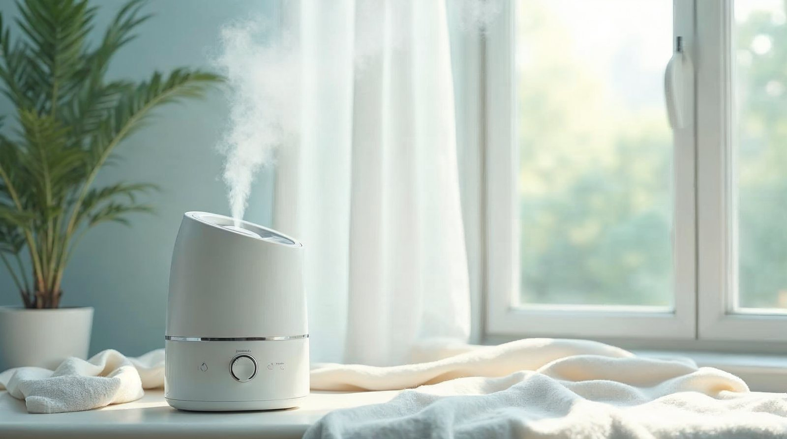
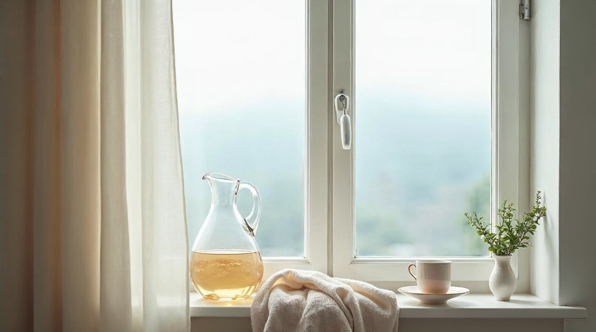
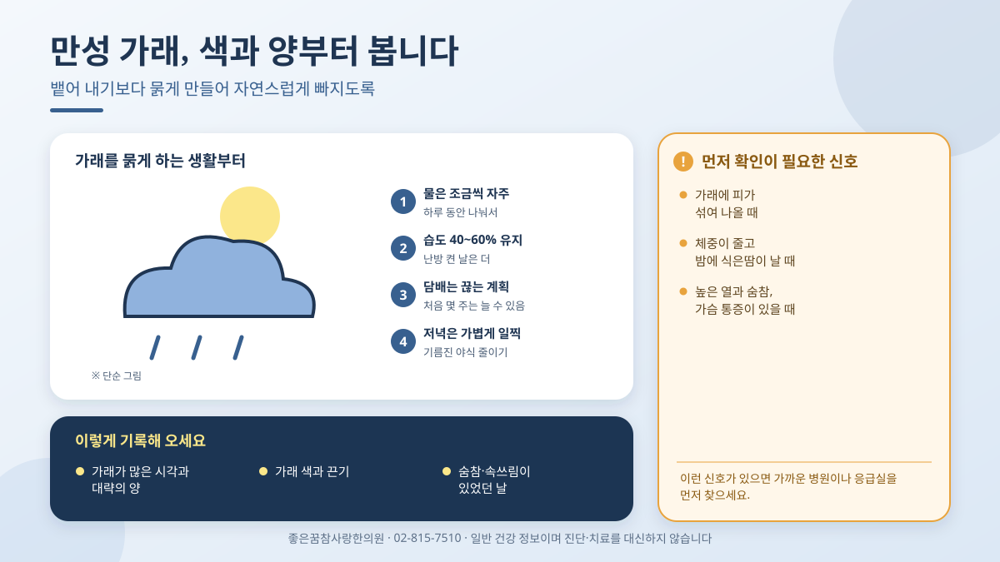

이종호 한의사 감수좋은꿈참사랑한의원 대표원장 (한의사 면허번호 19769)발행 2026-11-26 · 수정 2026-11-26
이 글의 차례
아침에 눈을 뜨면 가장 먼저 하는 일이 세면대 앞에서 가래를 뱉는 것이라는 분이 계십니다. 양치하다 헛구역질이 나고, 출근길에도 목에 뭔가 끓는 소리가 납니다. 감기는 이미 지나갔고 열도 없는데, 이 가래만은 몇 달째 떠나지 않습니다.
진료실에서 만성 가래를 말씀하시는 분들은 대개 조금 민망해하십니다. 사람들 앞에서 목을 가다듬는 소리가 신경 쓰이고, 가래를 뱉을 곳을 찾느라 마음이 쓰인다고 하십니다. 그런데 이 불편은 생각보다 흔하고, 원인을 나눠 보면 정리할 수 있는 부분이 꽤 있습니다.
가래는 기관지와 목에서 만들어지는 점액입니다. 평소에도 조금씩 만들어져 먼지와 세균을 감싸 밖으로 내보내는 일을 합니다. 그러니 가래가 있다는 것 자체는 몸이 제 일을 하고 있다는 뜻이기도 합니다. 문제는 그 양이 늘거나, 끈적해져서 잘 빠지지 않거나, 몇 주를 넘어 계속될 때입니다.
가래가 오래가면 목만 불편한 것이 아닙니다. 사람들 앞에서 말을 꺼내기 망설여지고, 밤에 기침으로 잠이 얕아지며, 아침마다 개운하지 않은 날이 이어집니다. 그래서 저는 가래의 양만큼 그 가래가 하루를 얼마나 흔들고 있는지도 함께 여쭙습니다.
보통 기침과 가래가 8주 넘게 이어지면 오래된 것으로 보고 원인을 차분히 찾아보게 됩니다. 감기 뒤에 잠시 남는 가래와 몇 달째 이어지는 가래는 살피는 방향이 다르기 때문입니다.
가래의 색과 양은 무엇을 말해 주나요
가래의 색은 몸 안에서 무슨 일이 일어나는지 짐작하는 단서가 됩니다. 다만 색만으로 원인을 단정할 수는 없으니, 다른 증상과 함께 보시는 것이 좋습니다.
- 맑고 묽은 가래: 찬 공기, 알레르기, 코에서 넘어오는 점액과 관련 있는 경우가 많음
- 하얗고 끈적한 가래: 건조한 환경, 흡연, 오래된 기관지 자극에서 흔함
- 누렇거나 초록빛 가래: 염증이 있을 수 있어 열이나 숨참이 함께 있는지 확인이 필요함
- 아침에 몰아서 나오는 가래: 밤사이 고였던 것이 일어나며 나오는 경우가 많음
양도 중요합니다. 하루에 몇 번 목을 가다듬는 정도인지, 컵에 모을 만큼 많은지에 따라 살피는 방향이 달라집니다. 가래가 날마다 많이 나온다면 병원에서 흉부 검사를 먼저 받아 보시길 권합니다.
왜 가래가 몇 달씩 이어질까요
가장 흔한 원인 가운데 하나는 담배입니다. 담배 연기는 기관지 점막을 자극하고, 점액을 밖으로 밀어내는 섬모의 움직임을 느리게 만듭니다. 그래서 피우는 분은 아침마다 가래가 끓기 쉽고, 끊은 뒤에도 한동안 가래가 이어지다 점차 줄어드는 경우가 많습니다.
두 번째는 코에서 넘어오는 점액입니다. 비염이나 부비동염이 있으면 콧물이 목 뒤로 넘어가 가래처럼 느껴집니다. 이 경우에는 코막힘이나 재채기가 함께 있는 경우가 많습니다.
세 번째는 역류입니다. 위산이 식도를 타고 올라오면 목이 자극을 받아 점액이 늘고 헛기침이 이어집니다. 저녁을 늦게 먹거나 과식한 날 밤, 누웠을 때 더 심해지는 것이 특징입니다.
네 번째는 기관지 자체의 오래된 자극입니다. 천식, 기관지 확장증, 만성 기관지염처럼 기관지에 오래 염증이 머무는 경우에도 가래가 이어집니다. 이런 경우는 호흡기 내과의 검사와 진료가 우선입니다.
다섯 번째는 건조함과 물 부족입니다. 몸에 물이 부족하거나 실내가 건조하면 가래가 끈적해져 잘 빠지지 않고, 목에 붙어 있는 느낌이 오래갑니다. 양은 많지 않아도 불편은 크게 느껴집니다.
가래와 후비루는 어떻게 다른가요
많은 분이 목에 있는 점액을 모두 가래라고 부르십니다. 하지만 코에서 만들어져 목으로 넘어오는 것과, 기관지에서 만들어져 기침으로 올라오는 것은 출발점이 다릅니다.
기침을 할 때 가슴 깊은 곳에서 올라오는 느낌이라면 기관지 쪽일 가능성이 높고, 목 뒤 위쪽에서 흘러내리는 느낌이라면 코 쪽일 가능성이 높습니다. 코막힘이나 콧물이 함께 있는지, 숨을 쉴 때 가슴에서 그르렁거리는 소리가 나는지도 구분하는 데 도움이 됩니다.
두 가지가 함께 있는 분도 적지 않습니다. 그래서 진료실에서는 목만 보지 않고 코와 가슴, 소화를 모두 여쭙습니다.
병원에서는 어떤 확인을 받아 보면 좋을까요
가래가 8주 넘게 이어진다면 호흡기 내과나 가정의학과에서 흉부 사진을 먼저 찍어 보시길 권합니다. 필요하다면 숨을 얼마나 세게, 길게 내쉬는지 보는 폐 기능 검사나 가래 검사를 함께 하기도 합니다.
코에서 넘어오는 점액이 의심되면 이비인후과에서 코 안을 들여다보는 진찰이, 역류가 의심되면 내과 상담이 도움이 됩니다. 받으신 결과지는 한의원에 오실 때 함께 가져와 주세요. 검사에서 큰 이상이 없다는 말을 들었는데도 불편이 이어진다면, 그때부터 생활과 몸의 흐름을 더 자세히 들여다보게 됩니다.
한의학에서는 가래를 어떻게 보나요
한의학에서는 예로부터 가래를 담이라고 불렀고, '비는 담을 만드는 곳이고 폐는 담을 담아 두는 곳'이라는 말이 있습니다. 소화 기능이 약해 몸속 물이 잘 돌지 못하면 끈적한 진액이 생기고, 그것이 폐와 기관지에 머문다고 본 것입니다.
그래서 만성 가래가 있는 분께 소화와 식사 습관을 자주 여쭙니다. 기름진 음식, 단 음식, 찬 음료, 늦은 야식이 잦은 분은 가래가 끈적하고 많아지는 경우가 있습니다. 식사를 정리하면서 아침 가래가 줄어드는 것을 느끼시는 분도 계십니다.
같은 가래라도 몸이 차고 맑은 가래가 많은 분, 열감이 있고 누렇게 끈적한 분, 입이 마르고 가래가 잘 안 떨어지는 분은 살피는 방향이 다릅니다. 진찰에서 이 차이를 나누는 것이 첫걸음입니다.

계절과 생활에 따라 달라지는 가래
가래는 계절을 탑니다. 겨울에는 찬 공기와 난방으로 기관지가 마르고 예민해져 아침 가래가 늘어나기 쉽고, 미세먼지가 많은 봄에는 목이 따갑고 끈적한 가래가 이어지는 분이 많습니다. 여름에는 에어컨 바람과 찬 음료가 겹치며 맑은 가래가 늘기도 합니다.
생활 리듬도 영향을 줍니다. 잠이 부족하고 피로가 쌓인 주에는 가래가 끈적해지고 목이 쉽게 잠긴다는 분이 많습니다. 술자리가 잦은 시기에는 다음 날 아침 가래가 유난히 많아지기도 합니다. 술과 늦은 야식이 겹치면 역류까지 더해져 목이 더 텁텁해집니다.
말을 많이 하는 직업도 가래와 가깝습니다. 하루 종일 말하다 보면 목이 마르고, 마른 목에서는 점액이 끈적하게 붙어 자꾸 목을 가다듬게 됩니다. 말하는 틈틈이 물을 한 모금씩 마시는 습관이 생각보다 큰 차이를 만듭니다.
만성 가래가 있을 때 자주 헷갈리는 것
첫째, 가래가 있으면 늘 염증이 있다는 생각입니다. 앞서 말씀드린 것처럼 가래는 건조함, 역류, 코에서 넘어오는 점액 등 여러 이유로 생깁니다. 색과 양, 다른 증상을 함께 보고 판단하는 것이 좋습니다.
둘째, 가래를 없애려면 기침을 세게 해야 한다는 생각입니다. 세게 기침하면 기관지와 목이 더 자극을 받아 오히려 가래가 늘기도 합니다. 묽게 만든 뒤 부드럽게 내보내는 편이 목에는 덜 부담스럽습니다.
셋째, 가래약을 오래 먹어도 괜찮다는 생각입니다. 약국에서 산 가래약이나 기침약을 몇 주씩 이어 드시는 분이 계신데, 오래 이어지는 가래라면 약으로 누르기보다 원인을 먼저 확인하는 것이 순서입니다. 드시는 약은 약사나 처방한 선생님과 상의해 정해 주세요.
먼저 이렇게 여쭙니다
처음 오시면 대략 이런 순서로 여쭙니다. 미리 생각해 오시면 이야기가 수월해집니다.
- 가래는 언제부터 이어졌나요? 감기 뒤였나요?
- 담배를 피우시거나 피우셨나요? 얼마나 오래였나요?
- 가래 색과 양, 가장 많이 나오는 시각은 언제인가요?
- 숨이 차거나 가슴에서 쌕쌕 소리가 나는 때가 있나요?
- 속쓰림이나 신물, 코막힘이 함께 있나요?
- 최근 흉부 사진이나 폐 기능 검사를 받으셨나요?
일하는 곳의 환경도 여쭙니다. 분진, 연기, 화학 냄새가 있는 곳에서 오래 일하셨다면 그 내용이 진료 방향을 정하는 데 중요한 정보가 됩니다.
일상에서 먼저 해 볼 수 있는 것
가래는 억지로 뱉어 내기보다, 묽게 만들어 자연스럽게 빠지도록 돕는 것이 목에 부담이 덜합니다.
- 미지근한 물을 하루 동안 조금씩 자주 마시기
- 실내 습도를 40~60% 정도로 유지하기
- 아침에 일어나 따뜻한 물 한 잔으로 목 적시기
- 담배를 피우신다면 끊는 계획 세우기
- 저녁은 잠들기 3시간 전에 가볍게 마치기
- 찬 음료와 기름진 야식, 단 간식 줄이기
담배를 끊으면 처음 몇 주 동안 오히려 가래가 늘어난 것처럼 느끼시는 분이 있습니다. 느려졌던 섬모가 다시 움직이면서 쌓였던 점액을 밀어내기 때문인 경우가 많으니, 이 시기를 너무 걱정하지 않으셔도 됩니다.
가래를 뱉을 때는 숨을 깊게 들이쉰 뒤 '하' 하고 두세 번 짧게 내쉬어 보세요. 세게 '캑' 하고 긁어내는 것보다 목에 부담이 적습니다. 따뜻한 김을 쐬는 것도 가래를 묽게 하는 데 도움이 됩니다. 샤워할 때 욕실의 따뜻한 수증기를 몇 분 천천히 들이마시는 것만으로도 아침 가래가 한결 부드럽게 빠진다는 분이 많습니다.
가볍게 걷는 시간을 늘리는 것도 좋습니다. 걸으면 숨이 깊어지고 기관지의 점액이 자연스럽게 움직입니다. 숨이 약간 찰 정도로 하루 20~30분 걸어 보세요. 찬 바람이 강한 날에는 목도리나 마스크로 목과 코를 가리고 걸으시면 기관지가 덜 놀랍니다. 실내에서 계단을 천천히 오르내리는 것도 좋은 대안입니다.
한의원에서 함께 살필 수 있는 경우
- 호흡기 검사에서 큰 이상은 없다는데 가래가 오래 이어지는 경우
- 소화가 더디고 몸이 무거우면서 가래가 많은 경우
- 찬 음식이나 찬 공기에 가래와 기침이 쉽게 늘어나는 경우
- 담배를 끊는 동안 가래와 목 불편이 이어지는 경우
- 입이 마르고 가래가 끈적해 잘 떨어지지 않는 경우
좋은꿈참사랑한의원에서는 먼저 아래의 '먼저 확인이 필요한' 신호가 없는지 살핍니다. 그다음 맥을 짚고 가래의 모양과 소화, 잠, 몸의 찬 기운과 열감을 함께 살펴 지금 상태를 정리합니다.
진찰 뒤 침 치료, 생활 관리 안내, 한약 상담 가운데 지금 상태에 맞는 것을 고릅니다. 한약은 드시는 약을 모두 확인한 뒤 신중하게 정하고, 임신 중이시라면 먼저 알려 주시고 산부인과와 상의하도록 안내합니다. 흡입기나 호흡기 약을 쓰고 계신다면 처방한 선생님과 상의 없이 멈추지 않으셔야 합니다.
한의원 진료는 호흡기 내과 진료를 대신하는 것이 아니라 나란히 가는 것입니다. 병원에서 폐와 기관지의 상태를 확인하고, 한의원에서는 그 사이의 소화와 잠, 몸의 찬 기운, 건조함처럼 가래를 늘리는 생활의 흐름을 함께 살핀다고 생각해 주시면 됩니다.
이렇게 기록해 오시면 상담이 쉬워집니다
가래는 날마다 조금씩 다르기 때문에, 2주 정도 간단히 적어 보시면 흐름이 보입니다.
- 가래가 많이 나온 시각과 대략의 양(티스푼, 큰 숟가락처럼 익숙한 단위로)
- 가래의 색과 끈기
- 담배를 피운 개비 수나 끊은 날짜
- 저녁 식사 시각과 메뉴
- 숨참, 쌕쌕거림, 속쓰림이 있었던 날 표시
기록을 보면 아침에만 몰리는지, 식사 뒤에 늘어나는지, 찬 공기를 쐰 날 늘어나는지가 드러납니다. 그 차이가 원인을 나누는 실마리가 됩니다.

오래된 가래와 차분히 지내는 법
몇 달 이어진 가래는 며칠 만에 사라지기보다 조금씩 옅어지는 경우가 많습니다. 그래서 하루하루의 양에 마음을 쓰기보다 2주, 한 달 단위로 흐름을 보시는 편이 덜 지칩니다.
이번 주에는 물 나눠 마시기, 습도 맞추기, 저녁 일찍 마치기 가운데 하나만 골라 꾸준히 해 보세요. 한 가지를 이어 가야 무엇이 내 몸에 맞는지 알 수 있습니다. 다음에 오시면 그 기록부터 함께 펼쳐 보겠습니다.
이런 증상은 먼저 확인이 필요합니다
- 가래에 피가 섞여 나오거나 이유 없이 체중이 줄고 밤에 식은땀이 나는 경우
- 높은 열과 함께 숨이 차고 가슴이 아프거나 누렇고 많은 가래가 갑자기 늘어난 경우
이런 신호가 있으면 한의원보다 가까운 병원이나 응급실을 먼저 찾으세요.
함께 읽으면 좋은 글
- 담배를 끊으려는데 아침마다 가래가 끓을 때는 어떻게 살피나요?
- 마른기침과 가래 섞인 기침은 어떻게 구분해서 기록하나요?
- 감기는 나았는데 기침만 몇 주째 남아 있을 때는 어떻게 살피나요?
- 목 뒤로 콧물이 넘어가서 자꾸 헛기침을 하게 될 때는 어떻게 살피나요?
- 천식으로 흡입기를 쓰고 있을 때 한의원에서는 무엇을 함께 살피나요?

여쭙는 것
- 가래는 언제부터 이어졌나요? 감기 뒤였나요?
- 담배를 피우시거나 피우셨나요? 얼마나 오래였나요?
- 가래 색과 양, 가장 많이 나오는 시각은 언제인가요?
생활에서 해 볼 것
- 미지근한 물을 하루 동안 조금씩 자주 마시기
- 실내 습도를 40~60% 정도로 유지하기
- 아침에 일어나 따뜻한 물 한 잔으로 목 적시기
한의원에서 함께 살필 것
- 호흡기 검사에서 큰 이상은 없다는데 가래가 오래 이어지는 경우
- 소화가 더디고 몸이 무거우면서 가래가 많은 경우
- 찬 음식이나 찬 공기에 가래와 기침이 쉽게 늘어나는 경우
먼저 확인이 필요한 신호
- 가래에 피가 섞여 나오거나 이유 없이 체중이 줄고 밤에 식은땀이 나는 경우
- 높은 열과 함께 숨이 차고 가슴이 아프거나 누렇고 많은 가래가 갑자기 늘어난 경우
한눈에 보는 표
| 구분 | 핵심 |
|---|---|
| 여쭙는 것 | 가래는 언제부터 이어졌나요? 감기 뒤였나요? 담배를 피우시거나 피우셨나요? 얼마나 오래였나요? |
| 생활에서 해 볼 것 | 미지근한 물을 하루 동안 조금씩 자주 마시기 실내 습도를 40~60% 정도로 유지하기 |
| 한의원에서 함께 살필 것 | 호흡기 검사에서 큰 이상은 없다는데 가래가 오래 이어지는 경우 소화가 더디고 몸이 무거우면서 가래가 많은 경우 |
| 먼저 확인이 필요한 신호 | 가래에 피가 섞여 나오거나 이유 없이 체중이 줄고 밤에 식은땀이 나는 경우 높은 열과 함께 숨이 차고 가슴이 아프거나 누렇고 많은 가래가 갑자기 늘어난 경우 |
자주 묻는 질문
가래를 삼켜도 괜찮나요?
목 뒤로 넘어간 가래를 삼키는 것은 흔한 일이고 대부분 소화 과정에서 처리됩니다. 다만 색이 짙거나 양이 많다면 뱉어서 색과 양을 한 번 확인해 두시는 것이 진료에 도움이 됩니다.
담배를 끊었는데 가래가 더 많아진 것 같아요.
끊은 직후 몇 주 동안 쌓였던 점액이 밀려 나오면서 그렇게 느끼시는 분이 많습니다. 다만 피가 섞이거나 숨이 차는 느낌이 있다면 병원에서 먼저 확인해 보세요.
가래를 묽게 하는 데 물은 얼마나 마시면 되나요?
한꺼번에 많이 마시기보다 하루 동안 조금씩 자주 나눠 드시는 것이 좋습니다. 심장이나 신장 문제로 물 섭취 안내를 받으셨다면 그 안내를 먼저 따르세요.
호흡기 약을 쓰고 있는데 한의원 진료를 같이 받아도 되나요?
쓰고 계신 약을 알려 주시면 그에 맞춰 진료 방향을 정합니다. 약은 처방한 선생님과 상의 없이 멈추지 않으셔야 합니다.
좋은꿈참사랑한의원은 재진 때 지난번 이야기부터 이어서 여쭙니다. 진료시간과 예약은 오시는 길에서 확인하세요.
어디서 상담받을 수 있나요?
좋은꿈참사랑한의원은 서울 동작구 만양로2길 2 신성빌딩 3층·5층(서울 동작구 상도동, 7호선 상도역 3번 출구 근처)에 있습니다. 한의사 3명(이종호 대표원장, 조영기 수석진료원장, 정원영 진료원장)이 진료합니다. 진료시간은 평일 09:30~20:00(점심 13:00~14:00), 토·일·공휴일 09:30~15:00이며, 방문 전 전화로 확인을 권합니다. 예약은 네이버 예약, 카카오톡 상담, 전화 02-815-7510로 받습니다.
이 글은 일반적인 건강 정보이며 개인의 진단이나 치료를 대신하지 않습니다. 증상이 있거나 복용 중인 약이 있다면 진료를 통해 확인하세요. 치료 효과는 개인마다 다를 수 있습니다.
작성 기준: 일반적으로 알려져 있는 건강 정보를 참고해 정리했습니다(대표원장 감수). 증상 기록은 1~2주 동안 하루 1회, 비슷한 시간에 적어 오시면 지난 상태와 비교하기 쉽습니다.